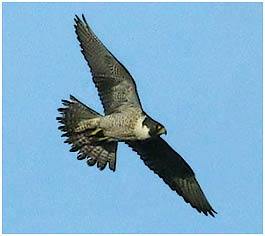

Peregrine
An unusual visitor to the reservoir, seen more often in winter.

1927 - "Frequently seen"
11/05/62 - Single bird
07/09/67 - Single bird
26/11/92 - single bird (BS)
16/01/93 - Single bird (AJB)
10/10/96 - Single bird (BS)
06/12/97 - Single bird Seen to attack a flock of c.50 Lapwing. (DWH)
01/01/98 - Single bird
13/09/98 - Single bird (AJB)
??/11/98 - Single bird
08/02/2000 - Single bird (LM)
15/03/00 - Single bird
05/10/00 - Single bird
22/02/02 - Single bird
05/05/04 - Single bird
17/12/04 - Single bird stooped at Moorhen
04/07/05 - Single bird
08/03/07 - Single bird
05/08/08 - Single male (KGH)
06/02/08 - Single imm. bird (KGH)
11/09/09 - Single (AG)
26/11/10 - Single (DWH)
03/03/11 - Single (KGH)
15/10/11 - Single juvenile (RH)
30/11/11 - Single adult (KGH)
25/08/12 - Single flew over (AG/DWH)
23/03/13 - Single (DWH)
11/09/13 - Single
14/09/13 - Single (DWH)
13/10/13 - 1 flew over high
08/07/14 - 1 mobbing Buzzard
10/10/14 - 1 bird of prey (probable Peregrine) chased off by crows
15/10/14 - 1 flew over
18/11/15 - 1 flew over
23/10/16 - 1 bird low over the reservoir
29/01/17 - 1 bird flew the length of the reservoir
10/09/21 - 1 bird (Roger Lyndsay)
25/02/22 - 1 fly by bird over the meadows (KGH)
01/04/24 - 1 bird over
03/02/25 - 1 flew low and may have roosted at the south end
20/11/25 - 1 at dusk (DWH)